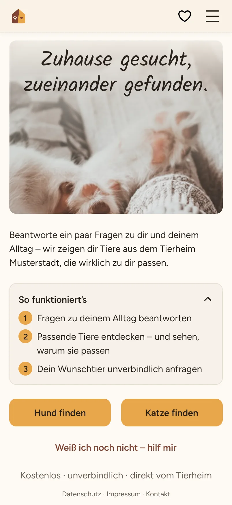
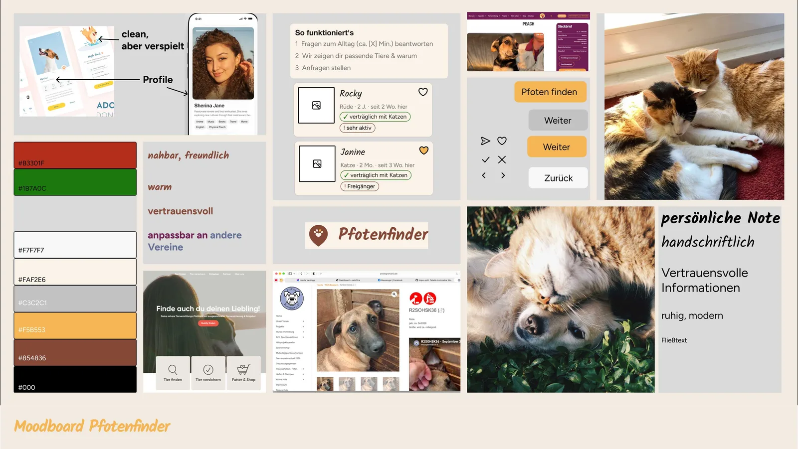
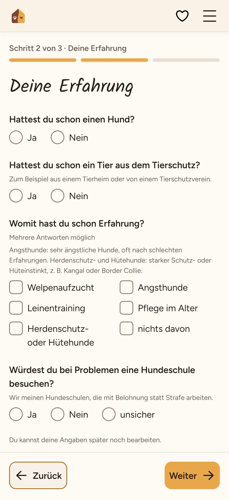
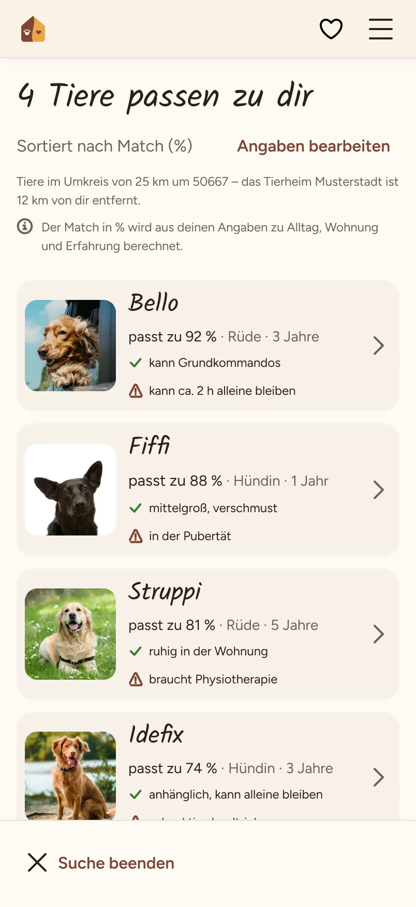
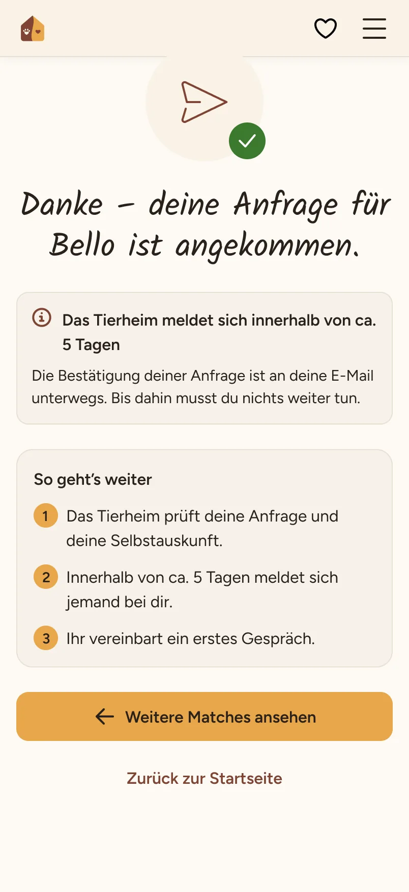

Case study · Product Design Bootcamp
Pfotenfinder
How people and shelter animals find each other, before the heart alone decides.


In short
Problem
People fall for a photo and only check afterwards whether the animal fits their everyday life. If it doesn't, the animal gets returned.
Approach
A matching module right on the animal shelter's website: first questions about your life, then suitable animals with reasons why. Also built as a white-label version with a real association, Ein Herz für Streuner e.V.
Status
Two hi-fi prototypes, mobile and desktop. The mid-fi test with 2 people produced 23 tickets; the hi-fi test with 5 people is prepared.
01 · The problem
Good will isn't enough.
The user side. People search thoroughly but decide by gut feeling. Animal profiles are short, full of platitudes and often have outdated photos, so you can't tell from them whether you're suited. Anyone with doubts usually only notices after moving in.
The shelter side. Only 18% of animal shelters in Germany still have capacity (German Animal Welfare Federation, 2024). The most common reasons for giving an animal up are being overwhelmed and lack of time. Placement coordinators screen out unsuitable requests at great effort, by phone, self-disclosure form and home check.
The tension. Every failed placement costs twice: the animal loses its home again, and the space is missing for the next one. Calls for help like this one from the circle around Ein Herz für Streuner e.V., where I volunteer, make that very clear.
Can anyone help? Amber is being returned after one day because the adopters won't give her any peace to settle in.
02 · Research
Three sources, one question.
I formulated hypotheses up front and tested them against fixed thresholds for confirmation and refutation. To me, hypotheses are tools that make assumptions visible and falsifiable, not conclusions.
Interviews
Three adopters with different animals, phases and living situations, plus one placement coordinator as an expert
Survey responses
84 in a relevant phase, 64 of them with online research as the basis for the detailed questions
Desk research sources
Incl. Powell et al. (2021), Graf (2025), German Animal Welfare Federation. Many studies come from the US, so I flagged assumptions for Germany
Insights
Merged and clustered from all three sources
H2: Choosing an animal is primarily emotional and visual.87.5% consider photos relevant, only 20.3% consider breed relevant.
confirmedH7: People who care about animal welfare are far more likely to contact a shelter than a breeder.NPS of contact likelihood: +43 for shelters, −68 for breeders. This hypothesis didn't come from my original set but from the data.
confirmedH3: People struggle to translate their own circumstances into concrete requirements for an animal.Need for suitability information 79.7%, reported doubts about their own suitability only 18.75%.
partly confirmedH4: Information about animals is scattered and not credible.93.75% found their sources credible.
refutedH1, H5, H6: Not testable with this instrument.Open for follow-up research.
open
Refuting H4 changed the direction.
I had suspected a platform problem: too many, too poor sources. In fact the landscape is trustworthy and concentrated. That ruled out the idea of yet another portal and put a module on the shelter's own website in focus.
03 · Insights
Fall in love first, think later.
Emotional choice
Pictures decide. The reasoning comes later: “She was so cute, I fell for her right away.” That's a design constraint, not a flaw to be educated away.
Underestimated fit
79.7% consider information on the required suitability relevant, but only 18.75% see their own suitability as a possible obstacle. The gap is invisible to the people affected.
“I really paint a worst-case scenario of how it can go, and people say: yes, yes, all fine. We'll manage.”
Placement coordinator in the interview (translated)
Trust is already there
68.3% trust the website of a shelter or association the most. What's missing isn't the amount of information but information that translates to their own lives. A solution has to go there, not next to it.
“The personality descriptions are always quite short … It feels very impersonal.”
Adopter in the interview (translated)
Clear stance on breeding
The target group is committed to animal welfare and categorically rejects breeders. A pattern that only emerged in the data, and a possible bias I keep in view.
Core insight
What's missing is a fit check before people bond emotionally with an animal.
04 · Segment & persona
Who first?
Three segments, one deliberate choice. The systematic searchers have the best-evidenced pain point and can be reached through a channel they already trust: 92.2% use association websites.
- The connected convincedLargest part of the target group, well evidenced, but little leverage
- The systematic searchers · chosenBest-evidenced pain point and a realistic, trusted point of intervention
- The undecided beginnersHigh potential impact, but little evidence
Jana-Sophie Meyer
around 28 · wants to rescue a dog · searching alone, without a network
Derived strictly from the sources: she recently started working remotely, considers herself “reasonably experienced” from walking relatives' dogs, researches in a structured way and still waits for the gut feeling “That's the dog!”.
Jana-Sophie needs reliable, individual information on temperament, health and her own suitability, because generic descriptions show her neither how the animal will behave at home nor whether she can meet its needs.
What she needs
- Current, personal information on a channel she trusts
- Concrete, verifiable details on health and compatibility
What holds her back
- Generic descriptions without a personal assessment
- Doubts about how trustworthy the organisation is
- Unclear adoption conditions
05 · How might we
How might we help Jana-Sophie match her circumstances with an animal's needs as early as possible in her search?
Out of five HMW questions, the only one that hits the timing at the heart of the problem. It flips the usual order: fit first, photos second.
06 · Concept
Not another portal. A matching tool where trust already lives.
Out of eight ideas I developed three as idea napkins and rated them on importance, effort and impact. I pursued the matching: it runs right on the shelter's own website, because nothing works without the shelters.
Matching
Questions about everyday life and experience, then only suitable, available animals.
Riskiest assumption: users trust the pre-selection.
Blind date
Animals first without photos, only through temperament and needs. The idea tackles the problem at its root and ranked second in my rating.
Why not? 87.5% rate photos as relevant. Take them away and people still open every profile and sort by looks, or go elsewhere. The trust the research showed to be the biggest asset would be gone.
Advisor
A chatbot that asks about living circumstances and gives assessments.
Why not? Trust in a chatbot for such a consequential decision was the least evidenced assumption of the three. The research showed trust in associations, not in technology.
- Step 1A need arisesOpen the matching
- Step 2Check fitAnswer questions about your everyday life
- Step 3Find optionsSee suitable animals and why they fit
- Step 4ChooseView profiles, pick an animal
- Step 5Send a requestSend the request to the association
Four decisions in the flow
- Less choice, better decision. Instead of a list of all animals, Pfotenfinder shows only suitable ones. That reduces choice overload (Hick's law). I deliberately left out free search as a detour in the MVP, so nobody skips the questionnaire.
- Moment of value: the results list. Every animal is selected with a reason, so falling in love with an unsuitable animal becomes less likely.
- Critical moment: the request. An animal may already be reserved, answers may be flattering or misjudged, and technology can fail. That's why requests go straight to the shelter, where experienced coordinators review them.
- No account, no barrier. Answers are stored locally on the device. Returning visitors don't have to start over, and nobody has to register before seeing an animal.
Module, not portal
The opportunity isn't another placement platform that demands extra upkeep from associations and bothers searchers with ads. Pfotenfinder goes to the associations, to where the trust already is. In the business model canvas I set it up as an affordable subscription: associations are funded by donations, so the model has to stay lean. I found no comparable offer for the German market.
Ethics as a design criterion
Existing matching tools put pressure on people with language: “your new best friend” next to numbers of killed animals. If you then don't find a match, you feel guilty. My guardrails: factual statements, no suggestive promises, and a result without a match is not the person's failure.
Responsible design
- Alt texts that describe the animal
- Matching without forced swiping, also usable by keyboard
- Plain language for terms like adoption fee, home check or giardia
07 · Wireframing & design
Warm, trustworthy, personal. And adaptable.
Guiding principle: the animal shelter around the corner, not the campaign. The design should support trust, not evoke pity. And because Pfotenfinder lives on the websites of different associations, it has to be able to adopt their colours.
Wireframing: three stages, each with a question
- Lo-fiDoes the happy path hold up?Questionnaire before the animals, then results list, detail page and request, without a detour through free search
- Mid-fi v1/v2Which building blocks repeat?Reusable components for questions, match cards, detail accordions and forms
- Mid-fi v3Does it feel reliable?Systematic audit and refinement, see iteration
MVP cut via the story map
Five activities carried the scope. Only the tasks that let me test the riskiest assumption made it into the MVP: do users accept a limited selection and find a suitable animal in it? I deliberately postponed comparing results.
Progressive disclosure
Health, compatibility and experience needed sit in accordions on the detail page. That keeps the page scannable on mobile. The photo stays on top: the emotional connection should form, just only with suitable animals.
Visual design

Brand
The claim “Zuhause gesucht, zueinander gefunden.” (home wanted, found each other) carries both sides of the placement. I dropped the logo with a paw cut out of a location pin because it came too close to the Tractive logo. I chose a house made of two interlocking halves with a paw and a heart: human and animal who fit together.
Typography with roles
Kalam stays the display typeface for headlines, the handwriting is the brand voice. For the UI I unified three parallel families into Figtree. Line height and letter spacing are set by role.
Colour as a system
13 semantic tokens drive 481 fills and 155 strokes. Instead of three blacks I use one warm near-black (#2A211B); amber and green are desaturated so they feel calm. Green stands for fit, amber for action.
Shape and depth
A radius scale of 6/8/12/16/20 plus pill replaces twelve arbitrary values. Match cards get their hierarchy from two brown-tinted shadows instead of borders.
Scalable as white label
The token structure is the basis for rolling the module out in an association's branding. For Ein Herz für Streuner I switched the hi-fi prototype to the association's colours and its real animals.
Accessibility
Visible labels above all form fields instead of placeholders only. Progress is segmented, so the step is recognisable without reading.
08 · Prototyping & testing
Accepted, but only if the score is traceable.
The test was meant to answer one question: do people accept a pre-selection when they're looking for an animal they want to fall in love with? That was the riskiest assumption behind the matching. Both participants completed the flow without dropping out and actively used the matching. How the score comes about, however, stayed unclear.
Setup
Moderated usability test of the mid-fi prototype (v4) on an iPhone, with thinking aloud, three tasks and a closing interview. The scenario put participants in the position of the persona Jana-Sophie. Two sessions in October 2026, 21 and 16 minutes. Beforehand I formulated four test hypotheses.
The self-disclosure in the questionnaire feels appropriate.Both fill it in on their own, appropriateness 4 out of 4. Technical terms and the age selection cause uncertainty.
confirmed, with reservationsInformation and score feel credible, not promotional.Nothing feels promotional. Unexplained deductions, missing sources and vague statements reduce credibility.
partlyThe request is completed independently.Both send the request in under a minute.
confirmedThe match is understood and used.Both rule out dogs using the match notes. One person only understands the score as a ranking.
partly
Top findings
The missing 8%
Both independently ask why Bello isn't at 100% although every point is green. The strongest pattern in the test.
Matching as a way to rule out
Physiotherapy, hunting instinct and required experience lead straight to ruling an animal out. The notes are at least as valuable as the percentage.
Project jargon instead of user language
“‘Passung’ is a stupid word.” The term was foreign to both.
Heart instead of card
One person taps the save heart instead of the card and doesn't reach the detail page without a hint. The only point where I had to step in.
Uncertainty around sending
Before: “It feels too easy.” Afterwards: “Home page. And now?”
Contrast
Criticised by both, consistently by one person.
Honest about what this shows
Two people give first hints, not statistical confirmation. One participant had dog experience and repeatedly fell out of the persona role; a wrong prototype version was also running for them. From that I derived four method tickets instead of smoothing over the findings. When two people independently stumble at the same spot, I still count it as a clear pattern.
From findings to backlog
- 23tickets in total
- 6critical: block the flow or undermine trust
- 11important: friction that worsens answers or understanding
- 6nice-to-have
I prioritised by impact on trust in the matching. The critical and important design tickets went into the revised hi-fi v3.
Second test round: hi-fi v3
Prepared
Five people from the focus segment, without their own dog experience and without having taken part in the first test. The round specifically checks the 20 tickets I marked for verification. A ticket counts as solved when at least 4 of 5 people meet the criterion without help. I also capture the Single Ease Question per task and the trust score in the animal information (goal ≥ 4 out of 5, mid-fi: 3).
Why no A/B test?
For the most important change, the separated match box, I created a test card of its own. An A/B test would be unrealistic: requests are rare. With an assumed 5% request rate you'd need around 8,000 people per variant for a 20% effect, and season and animal stock would skew the result. Instead, a moderated comprehension test with 5 people checks both versions in alternating order: “Explain to me why Bello doesn't reach 100%.”
09 · Iteration
An unexplained deduction weighs more than a low score.
The most important iteration came from a question two participants asked independently: why is Bello only at 92%? It turned the matching into one that shows its reservations openly. An honest audit of my own mid-fi v2 had prepared the ground: it looked finished but had no system underneath.
From test finding to change
-
What didn't work
Missing 8% unexplained; “Why X fits” also contained points that don't fit, “a bit irritating”
Changed in hi-fi v3Name deductions concretely. Match box split into “What fits” and “Good to know”; every results card shows one strength and one reservation
Trade-offFor hard-to-place animals, “Good to know” may put people off. I accept that deliberately: fewer but better-fitting requests are a success for animal welfare
-
What didn't work
Score understood only as a ranking; “Passung” (fit) foreign
Changed in hi-fi v3“92% match” plus an explanatory sentence: calculated from your answers about everyday life, home and experience
Trade-offThe more precise technical term goes, the target group's language wins
-
What didn't work
Tapping the heart instead of the card
Changed in hi-fi v3Card clearly clickable with an arrow; saving only on the detail page, with a label; saved list with a counter in the header instead of the menu
Trade-offSaving straight from the list is gone, one more step for an unambiguous way in. The impulse for the visible saved list came from presentation feedback
-
What didn't work
Trust in the animal information only 3 out of 5: no source, “healthy” says nothing, “medium-sized” imprecise
Changed in hi-fi v3Source and date of the information, size in cm and weight in kg, concrete health details, full-body photos with enlarged view, section on the animal's history
Trade-offMore data that an association has to keep up to date
-
What didn't work
“Am I allowed to press send request?” and afterwards “Home page. And now?”
Changed in hi-fi v3Note above the button: “Non-binding, but meant seriously”; confirmation with a 5-day promise and “See more matches”
-
What didn't work
Terms like “positively working dog school” unclear; age selection deselected by accident
Changed in hi-fi v3Help texts, concrete grooming options, finer age groups, “Multiple answers possible”
Trade-offSlightly more text in the questionnaire
-
What didn't work
Grey text and selection fields too low in contrast
Changed in hi-fi v3All contrasts to WCAG AA: 4.5:1 for text, 3:1 for UI elements; selected values dark and bold
Trade-offThe restrained warm palette gets somewhat stronger
Mid-fi v2 → v3: audit instead of gut feeling
- Typography
Three families in parallel, one of them not even available in Figma
AfterFigtree for UI, Kalam for display, scale by role
- Colour
Pure black 74×, warm and cool greys mixed, accents up to 100% saturation
AfterOne warm near-black, one grey family, desaturated accents
- Tokens
No variables, no styles
After13 semantic tokens, 636 bindings
- Radii and spacing
12 radii, gaps without a base scale
AfterRadius scale 6 to 20 plus pill
- Hierarchy
Cards via borders, a single shadow
AfterTinted elevation levels for cards, header, sticky CTA, dialog
- “No match”
Three identical-looking buttons
AfterPrimary, secondary, text link: a clear order
- Forms
Placeholders only as labels
AfterVisible labels, realistic example values
- Microcopy
“Thanks! …”, “Find your paw!”
After“Thanks – your request for Bello has arrived.”
Deliberately not done
The accordions on the detail page stayed even though they hide content: on mobile, progressive disclosure is right here. I didn't create hover and pressed states for the static prototype. I rejected a suggestion from Figma Make to place the match score directly on the animal photo: it covers exactly what matters, the animal.
Hi-fi: decisions under real constraints
Data storage
Without storage, users would have to fill in the questionnaire again on every visit. With an account and a server, the barrier for associations and data protection would be too high. I chose local storage on the device: no account, no server, requests go straight to the shelter. I gain convenience and trust and give up use across devices.
Real partner, real limits
At Ein Herz für Streuner the association set the rules:
- The self-disclosure runs through PetOffice, with no interface for prefilling. Instead of faking an integration, I rebuilt the request into a handover.
- The association maintains animal attributes only on its website. The matching has to work with that data.
- Internal placement information must not be published. The case study only shows what is public.
- Pfotenfinder uses the informal “du”, matching the association.
10 · Final design
Two prototypes, one product.
Pfotenfinder as a standalone concept and as a module in the branding of a real association. The association version shows that the “module, not portal” strategy holds up in practice.
The happy path in five screens

Everyday life firstThree short steps with visible progress, before the first animal photo. Answers stay on the device until a request is sent. 
Jargon explainedWhat an anxious dog or a livestock guardian dog is sits right next to the question, so nobody misjudges themselves out of not knowing. 
Reasons, not photosEvery match shows what fits and what to watch out for, plus the distance to the shelter. Fit comes before falling in love. 
A match you can followHow the score is calculated and who provided the information is shown right there. This addresses the riskiest assumption: trust in the pre-selection. 
No radio silenceThe answers go along as the self-disclosure. Afterwards it's clear when the shelter will get back and what happens next.
There's also a no-match screen without guilt, a saved list without an account and full control over the locally stored answers.
Three details against the trust problem
Honest matching instead of a sales profile
Every results card shows a reservation next to a strength, for example “can stay alone for about 2 hours”. That answers the criticism from the interviews that profiles show animals “only ever from their very best side”.
Reasons instead of a black box
“92% match” never stands alone: a note explains the calculation, and the detail page translates animal attributes into terms of your own answers. According to H3, exactly this translation is what searchers couldn't do themselves.
Making freshness visible
“Information from the carers at Tierheim Musterstadt · As of: October 2026” answers the pain point of outdated photos and descriptions.
Association version: Pfotenfinder for Ein Herz für Streuner
The association version isn't a re-skin but an adaptation to real processes. Pfotenfinder sits on the association's home page and its dog placement page, on mobile and desktop. The header is in the association's yellow, its purple carries links and secondary actions. It shows real animals such as Murphy, Matteo, Charlotte and Luddu, with the note “With kind support from Ein Herz für Streuner”.
-
Generic version
Questionnaire in 3 steps
Association version4 steps: home, everyday life, experience, wishes, with conditional questions, for example about children or another dog
WhyReflects what the association actually needs to know for a placement
-
Generic version
“Send request”, answers go along
Association version“Ready for Murphy?”: answers to look up, then “To the self-disclosure” at the association
WhyNo interface to PetOffice, so an honest handover instead of a faked integration
-
Generic version
Confirmation “Request arrived”
Association version“Continue at the association” with the process afterwards (about 3 to 6 weeks)
WhyThe process doesn't end at Pfotenfinder but at the association
On the handover screen, a “Good to know” block in plain language explains: the self-disclosure is not a reservation, and adoption isn't a purchase, the adoption fee covers part of the costs for vaccinations, chip, neutering and transport. That fulfils the accessibility requirement on technical terms in the final design.
11 · Impact
A placement only counts once it lasts.
Pfotenfinder measures success by whether an animal still lives in its home after six months, not by clicks.
North star
Share of animals placed through Pfotenfinder that still live in their new home after 6 months
Measured by: feedback from the associations. Target: first establish a baseline with the partner association.
KPI 1: questionnaire
Completion rate of the suitability questionnaire: sessions that finish all steps
Measured by: funnel tracking, supplemented by session recordings at drop-off points. Target: ≥ 70%, mobile at most 10 percentage points below desktop.
KPI 2: self-assessment
Increase in “How well do you know which animal fits your everyday life?” before and after the questionnaire
Measured by: optional one-click question on a 5-point scale, verbal in the test. Target: ≥ 60% rate themselves at least 1 point higher.
Early indicator
Coordinators' rating of requests as suitable or unsuitable
Measured by: feedback from the associations. Target: to be set together with the association.
Activation
Understanding the matching result and opening an animal profile
Measured by: funnel step after the questionnaire. Target value still open.
Why KPI 1 and 2
If the questionnaire is abandoned or doesn't trigger any insight, all that's left is another photo gallery.
How the north star came about
My first north star was the share of requests that come through the matching. That's measurable early but only measures usage, not impact. After feedback in the bootcamp I switched to the outcome. The matching share is now an early indicator, not a goal.
Impact chain
Today people decide by looks first and check their suitability afterwards. With Pfotenfinder, suitability becomes conscious before the photo creates a bond. For users that means a family member who doesn't overwhelm them. For associations: fewer returns, less screening of unsuitable requests and more capacity for the next animal.
Putting the baseline in context
According to Powell et al. (2021), 9.2% of adopted animals are returned within six months, dogs at 16.3% clearly more often than cats. The study is from the US; for Germany there is no reliable research. A baseline of my own with the partner association would be the first step of a real pilot.
Evidence so far
In the mid-fi test both people completed the flow without dropping out, sent the request in under a minute and actively ruled out dogs using the match notes. A real association has approved real animals, its branding and the public embedding of the prototype.
12 · Learnings & next steps
What I take away.
My most valuable moment was a refuted hypothesis. Had I held on to H4, I would have built another portal, exactly what neither searchers nor associations need.
Emotion is a condition, not an opponent
The blind date idea would have solved the problem elegantly, on paper. The matching uses the photo but puts it at the right point in the flow.
System before polish
Mid-fi v2 looked finished but had no foundation. Today I'd set up tokens and a type scale at the transition to mid-fi and spare myself the clean-up round.
Retrospective data has limits
76 of the 84 relevant respondents already had their animal, only 8 were still deciding. For doubts about suitability before adoption, next time I need people who are in the middle of their search.
Real constraints make better decisions
No PetOffice interface, no internal information, data only on the website: working with the association turned a concept into a product that can be built into the real world.
Lock down the test setup beforehand
In the mid-fi test, scales were anchored differently, one person wasn't from the target group, and a wrong prototype version was running. That became four method tickets and a checklist. And: choose terms from the target group's point of view, “Passung” was my project vocabulary, not theirs.
Next up
First the prepared hi-fi v3 round, then a pilot with Ein Herz für Streuner that establishes a baseline for the return rate. Without a starting value, the north star metric can't be assessed.
Further steps
- Validate the matching with coordinators. Do experienced coordinators agree with the proposed pairings? That checks the quality of the algorithm before real people trust it.
- Make requests more flexible. Allow requests for several animals and redirect a request to another animal if the first has already been placed.
- Reach segment 3. Undecided beginners need predictability and clarity about an animal's history, especially for animals from international animal welfare.
- Design the association side. How do associations maintain animal attributes so the matching gets good data, without extra effort on top of their website?
- Test the open hypotheses. Investigate H1, H5 and H6 with a suitable instrument, for example a diary during the search phase.